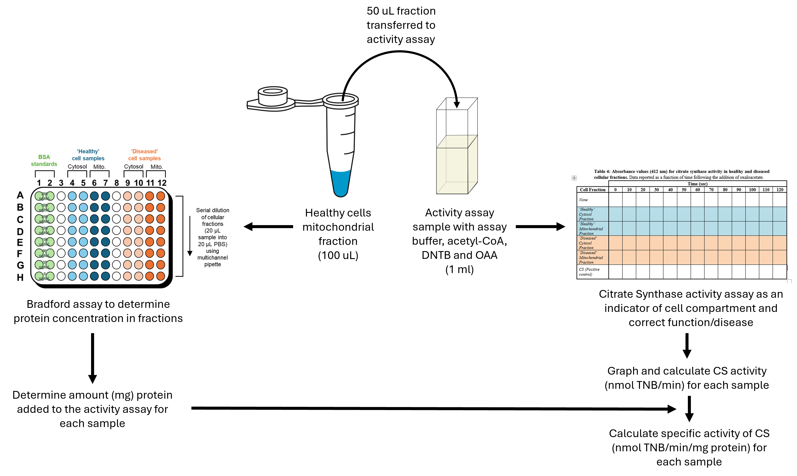
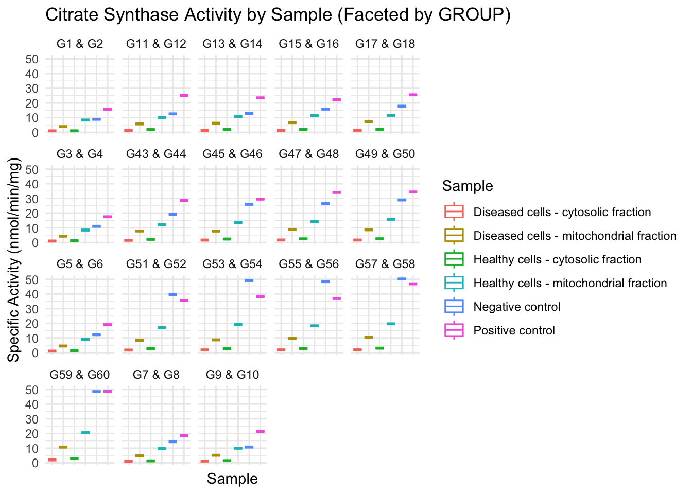
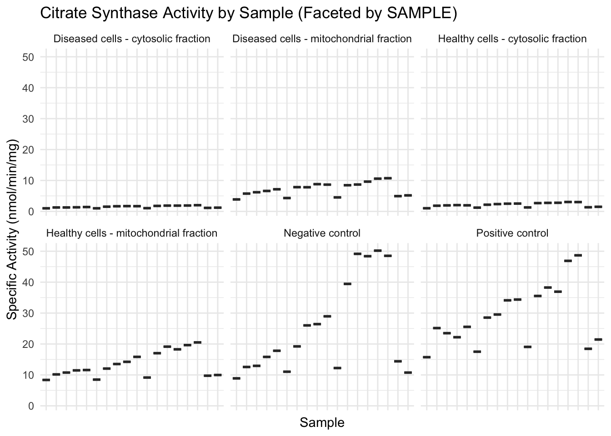

install.packages("tidyverse")Dry Prac 2 — Subcellular Fractionation Analysis
Background and Purpose
In Dry Practical 1, you were introduced to the basics of handling biological data in R, using tidyverse functions and ggplot2 to visualise simple trends. That session was designed to help you become comfortable navigating RStudio, working with tabular data, and generating figures that communicate biological patterns clearly.
In this second dry practical, we’ll extend those skills by working with experimental data that you generated in the wet lab. Specifically, we’ll use your results from the subcellular fractionation practical, where you separated healthy and diseased cells into mitochondrial and cytosolic fractions, then measured protein concentration and enzyme activity.
This practical will focus on:
- Calculating specific enzyme activity for each sample
- Comparing the mitochondrial and cytosolic fractions from healthy vs diseased cells
- Using
dplyrtools to filter, summarise, and interpret biological data - Visualising patterns across individual and class-wide datasets
By the end of this session, you’ll have created professional-quality plots and learned how data wrangling tools in R can help you test biological hypotheses.
ACTION REQUIRED
Open R studio on your computer and create a new r script for this class. If you are confused about how to do this refer to the introduction section of the BIOL340 practical website.
Visualizing Data and Installing and Loading Packages
R can make many types of plots. Let’s plot our nucleus sizes using ggplot2, which is included in the tidyverse.
If you haven’t installed the tidyverse package yet, you can do so via copying and running:
We also have to load the library by copying and running this line of code:
library(tidyverse) # Loads ggplot2, dplyr, tidyr, and moreWe are now set up to start looking at our data from Wet Lab 3
Experiment reminder
To remind you of what you completed during wet lab 3 and what data we will be dealing with today we have the below experimental workflow. 
You should have two types of experimental data.
The results of the bradford assay that will allow us to work out the protein concentration of each sample. This is important for calculating the specific activity of Citrate Synthase in each sample.
The Citrate Synthase activity assay data, which is in the form of absorbance over time. We will use this to calculate a rate of activity.
Load the Class Dataset
This dataset has: 1) Protein concentration from the Bradford assay, 2) Absorbance readings every 10 seconds for each sample, 3) The reaction rate already calculated
Note
Task: Load the class dataset and view the column names.
data <- read_csv("frac_data.csv")
head(data)# A tibble: 6 × 22
GROUP Sample `0` `10` `20` `30` `40` `50` `60` `70` `80` `90`
<chr> <chr> <dbl> <dbl> <dbl> <dbl> <dbl> <dbl> <dbl> <dbl> <dbl> <dbl>
1 G1 & … Negat… 0.001 0.001 0.002 0.002 0.002 0.002 0.002 0.002 0.002 0.002
2 G1 & … Healt… 0.003 0.011 0.016 0.019 0.022 0.025 0.027 0.028 0.029 0.03
3 G1 & … Healt… 0 0.016 0.031 0.048 0.066 0.083 0.101 0.118 0.135 0.152
4 G1 & … Disea… -0.012 -0.01 -0.007 -0.004 -0.002 0 0.002 0.005 0.007 0.009
5 G1 & … Disea… 0 0.008 0.016 0.024 0.033 0.042 0.051 0.059 0.068 0.076
6 G1 & … Posit… 0.178 0.408 0.498 0.544 0.58 0.61 0.637 0.663 0.688 0.708
# ℹ 10 more variables: `100` <dbl>, `110` <dbl>, `120` <dbl>,
# `rate of change` <dbl>, `concentration change` <dbl>,
# `amount TNB/s (M)` <dbl>, `amount TNB/s (nM)` <dbl>,
# `amount TNB/min (nM)` <dbl>, `protein concentration` <dbl>,
# `protein amount` <dbl>Plot the Absorbance Over Time
This shows how absorbance (A412) changes during the reaction. It helps us understand how fast the reaction is happening.
Note
Task: Make a long version of the data and plot absorbance vs time.
data_long <- data %>%
pivot_longer(cols = c(`0`:`120`), names_to = "time", values_to = "absorbance") %>%
mutate(time = as.numeric(time))
ggplot(data_long, aes(x = time, y = absorbance, colour = Sample)) +
geom_point(alpha = 0.6, size = 2) +
geom_smooth(method ='lm') +
labs(title = "Absorbance Over Time",
x = "Time (s)",
y = "Absorbance") +
theme_minimal()
What does this tell you about the rate of the reactions for the different sample types?
Calculation help and determining specific enzyme activity
One of the key goals of the wet lab was to measure citrate synthase activity, a marker for mitochondrial function. However, raw absorbance rates don’t mean much on their own—we need to normalise them to protein content to make meaningful comparisons.
We calculate specific activity as follows:
Specific activity = Amount TNB / min / mg proteinWe can use the
mutate()function to do some of the maths for us on the data set as a whole. First we need to work out the rate, which we have completed for you based on the line equationy = mx + b, where m = rate of change.Once we know the rate of change we can then work our change in concentration over time by using the beer-lambert law or
A = ϵ × l × c, we know our absorbanceA, and our path lengthl = 1. The extinction co-efficient (e) for TNB (412) ise = 13600 M-1 cm-1. So here we just need to rearrange the equation such that it equalsA/e = c. In other words we just divide our absorbance values by 13600
data <- data %>%
mutate(`concentration change(ΔC/s)` = `rate of change` / 13600)- We can then convert this to an amount (in mole) of TNB produced/min.
Use A = C * V (note: 1 ml = 0.001 L)
data <- data %>%
mutate(`amount TNB/s(M)` = `concentration change(ΔC/s)` * 0.001)- To get to nanomole nM we just times this by 10^9
data <- data %>%
mutate(`amount TNB/s(nM)` = `amount TNB/s(M)` * 10^9)- We can then convert this to amount/min rather than seconds by multiplying by 60
data <- data %>%
mutate(`amount TNB/min(nM))` = `amount TNB/s(nM)` * 60)- Now to get to specific activity we need to tie this amount value back to the protein concentration in our samples. This we calculated using a standard curve as
mg/mL. So to get to amount inmgwe need to times by the volume added, which in our case was 50 uL or 0.05 mL.
data <- data %>%
mutate(`protein amount` = as.numeric(`protein concentration`) * 0.05)- Finally we can devide dividing your final Amount TNB(nm) data by the Protein amount (mg) column. This means your new column will be Amount TNB/min/mg.
data <- data %>%
mutate(specific_activity = `amount TNB/s(nM)` / `protein amount`)Here the code is dividing your final Amount TNB/min data by the Protein amount (mg) column. This means your new column will be Amount TNB/min/mg.
Note
Task: Using the steps above calculate specific activity for the class data.
Class Data Analysis: Specific Activity of Citrate Synthase
Now that you’ve calculated specific activity, we can move on to analysing the class-wide dataset. This combined data allows us to evaluate trends across all groups and gain a broader perspective on variation.
Make a Bar Plot of Class Results
This plot shows how enzyme activity changes between samples in the class dataset.
ggplot(data, aes(x = Sample, y = specific_activity, color = Sample)) +
geom_boxplot() +
labs(title = "Citrate Synthase Activity by Sample (Class Data)",
x = 'Sample',
y = "Specific Activity (nmol/min/mg)") +
theme_minimal() +
theme(axis.text.x = element_blank(),
axis.ticks.x = element_blank())
Which samples had the highest activity?
Compare Groups Using Faceting
In R we have the ability to create a lot of graphs very quickly using something called faceting. Faceting creates a separate plot panel for each category in a grouping variable—this makes it easier to compare groups side-by-side without crowding the same graph.
In this case, we can use facet_wrap(~ GROUP) to generate one boxplot per group. Each panel will show the different sample types (cytosol vs mitochondria) within that group. This helps us quickly spot patterns across the class, like whether healthy samples consistently show higher activity than diseased ones.
ggplot(data, aes(x = Sample, y = specific_activity, color = Sample)) +
geom_boxplot() +
labs(title = "Citrate Synthase Activity by Sample (Faceted by GROUP)",
x = "Sample",
y = "Specific Activity (nmol/min/mg)") +
theme_minimal() +
theme(axis.text.x = element_blank(),
axis.ticks.x = element_blank()) +
facet_wrap(~ GROUP)
We can facet in all sort so different ways, here in the below code we change our plot so we have every group togeather and facet by sample instead.
ggplot(data, aes(x = GROUP, y = specific_activity)) +
geom_boxplot() +
labs(title = "Citrate Synthase Activity by Sample (Faceted by SAMPLE)",
x = "Sample",
y = "Specific Activity (nmol/min/mg)") +
theme_minimal() +
theme(axis.text.x = element_blank(),
axis.ticks.x = element_blank()) +
facet_wrap(~ Sample)
Compare Healthy vs Diseased Cells
Group the class data by sample type (healthy or diseased) and fraction (cytosol or mitochondria) to get averages.
Note
Task: Make a table showing mean and standard deviation for each sample type across all groups.
data %>%
group_by(Sample) %>%
summarise(mean = mean(specific_activity), sd = sd(specific_activity))# A tibble: 6 × 3
Sample mean sd
<chr> <dbl> <dbl>
1 Diseased cells - cytosolic fraction 1.47 0.337
2 Diseased cells - mitochondrial fraction 7.20 2.15
3 Healthy cells - cytosolic fraction 2.10 0.645
4 Healthy cells - mitochondrial fraction 13.3 4.09
5 Negative control 25.2 15.2
6 Positive control 29.0 9.80 Question: What sample had the highest enzyme activity?
Question: What does this show about mitochondrial function?
Question: Can you detect an effect of disease?
Summary
By working with your own experimental data and combining it with class-wide results, you’ve learned how to:
- Import and explore real experimental datasets
- Calculate and interpret specific enzyme activity
- Use R to summarise biological variation
- Visualise group-level trends using scatter plots and boxplots
- Quickly analyse trends across data by using faceting
This approach not only gives you hands-on experience with data science tools but also helps you understand how bioinformatics pipelines are used in real molecular biology research—from raw numbers to biological insight.